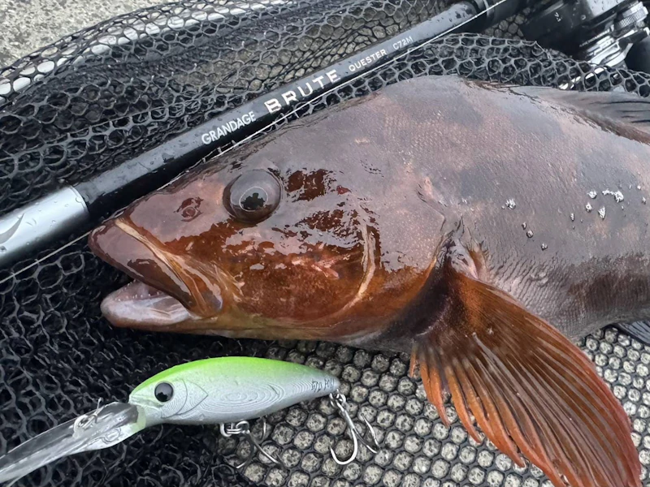

マイヨール70SL(MAYOL)
マイヨール（MAYOL）70SLはApiaが2026年に発売した新作ルアーです。
ボートゲームやストラクチャーうちに最適なシャッドミノーが登場しました！釣れる秘訣を徹底解説。

- メーカー
- Apia(アピア)
- 長さ
- 70 mm
- 重さ
- 8.5 g
- フック
- #8×2pcs
- レンジ
- MAX2.5m
- タイプ
- シンキング
- アクション
- タイトピッチウォブリング
- ターゲット魚種
- シーバス/ロックフィッシュ
- 価格
- 1,980円(税抜)
- 発売日
- 2026年3月10日
マイヨール70SLの特徴
コンセプトは「いち早く深いレンジに到達し、短い距離の中でしっかりアピールできること」。ダウンサイズモデルの登場で、小型ベイトへの対応力がアップ！
-
NEW重心システム搭載による飛距離向上
「リニアエンジン（PAT.P）」を搭載することで飛行姿勢が安定し、少ない入力でも飛距離が出しやすく、ボートからの穴撃ちやストラクチャー攻略で求められるキャスト精度も向上
-
マイクロベイトにも対応
マイヨール70SLのシルエットはマイクロベイトライクに仕上がっており、ルアーを見切る魚からの反応を得やすい。
-
深いレンジの魚もターゲットに
急潜行するこのルアーは他のルアーでは届かないレンジにいち早く到達し、アプローチしきれていない魚の目の前へ送り届けることができる。
マイヨール70SLの使い方・得意な状況
直進性に優れた安定した飛行姿勢、着水直後からキビキビと立ち上がるレスポンス、ディープレンジまで一気に到達する急速潜行性能。さらに、短い距離の中でもしっかりと存在感を示すアクションと、バイトを引き出す“喰わせの急浮上”。 これらすべての要素を高次元でまとめ上げ、ボートシーバスゲームにおけるストラクチャー周りのディープゾーン攻略に特化したルアーに仕上がっています。
ワンポイント
ボートゲームだけでなく、足場の高い堤防などオカッパリの釣りにおいても、しっかりと深いレンジを探ることが可能。 シーバスやクロダイはもちろん、岸から狙うアイナメやソイ、キジハタといったロックフィッシュ狙いにも対応。 
人気カラー
ナイトゲームでも使いやすいカラー。
 パニックカタクチ
パニックカタクチ
スタンダートベイトのカタクチイワシを模倣したカラー。
フラッシングと定番カラーを両立したカラー。シーバスにはこれ
シリーズ唯一のUVカラー。人気No.1
画像出典:Apia公式HP
マイヨール70SLに似ているルアー
- マイヨール80S
- atatu70S